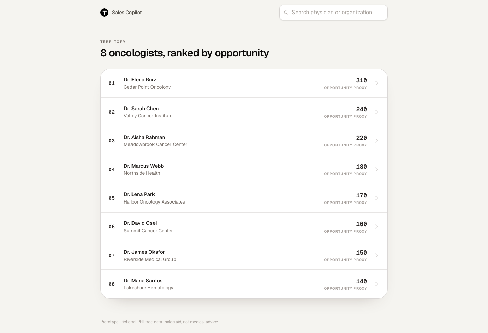
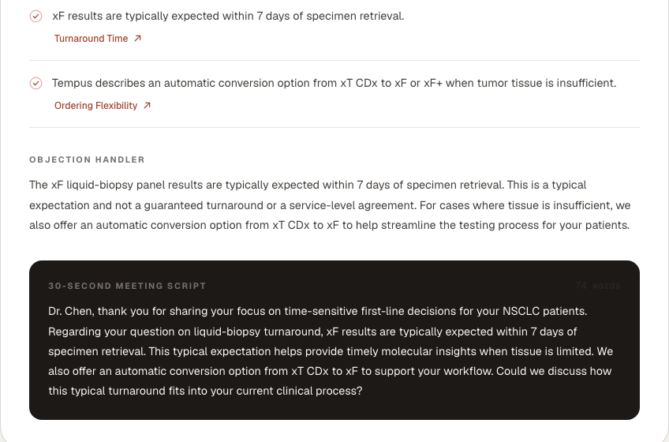
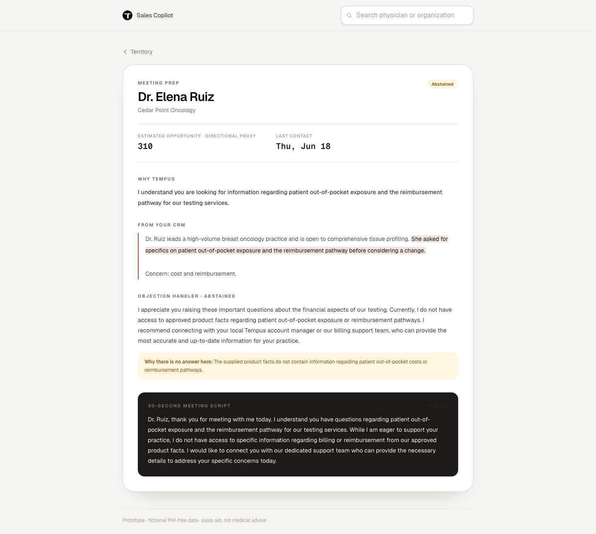

The data already exists. It lives in three places, and the rep does the synthesis by hand, the night before.
Open a doctor and the brief is generated on the spot. Seconds, not an evening.


If a check fails, the brief is blocked. The rep is never handed a claim we cannot back.

I report both. The second number includes the one retry, so quoting it alone would credit the prompt for what the retry fixed.
"This is a typical expectation, not a guaranteed turnaround."
The validator blocked itfor using the word "guaranteed."
The model was doing exactly what the rule existed to enforce, and got punished for saying the safe thing out loud. So I fixed the check, not the model. Negated phrases are now stripped before the prohibition runs. "We guarantee 7 days" is still blocked.
A validator you never correct is a validator you do not trust.